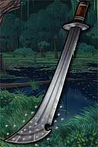

|
DESCRIZIONE
 |
Con questo
incantamento minore possono essere incantate solo le armi da corpo a
corpo da taglio o da punta.
Un fedele di Eram che impugna quest'arma può decidere,
una volta per ogni
flusso di energia divina di Eram, di invocare il potere della divinità per far
ricoprire la lama o la punta dell'arma di grossi granelli di sale
marino. Per attivare il potere basta invocare
mentalmente la
propria divinità e non è richiesto l'utilizzo di un'intera azione bensì solo
di una frazione del round, si considera una
free action
che impone unicamente una penalità di +3
(+2 se si utilizza un'arma rituale del Culto di Eram) alla propria iniziativa. Nel
round di attivazione e nei quattro round immediatamente successivi
quando chi la impugna
colpisce in corpo a corpo una qualsiasi creatura (compreso se stesso od
un amico in caso di errore) ferendola (è, quindi, necessario produrre
una qualche ferita) il sale presente sull'arma brucerà le ferite
provocate sul corpo della vittima la quale, quindi, dovrà superare
immediatamente un tiro salvezza su robustezza per non restare
incapacitata a causa del dolore per il resto del round in corso e per
l'intero round successivo. Questo incantamento avrà effetto solo
sulle creature aventi un corpo animale di tipo organico (non funzionando
ad esempio su non morti, costruiti, elementali, esseri vegetali,
melmoidi, ecc...). Sono parimenti immuni agli effetti
di questo incantamento tutte le creature immuni al dolore fisico.
Le creature che posseggono la competenza "Pain Tollerance"
possono effettuare un prova nella stessa ogni round in cui sarebbero
state incapacitate; laddove la prova è stata effettuata con successo le
stesse non subiranno le penalità previste nel round in corso. Si noti che questo potere può essere utilizzato solo dai fedeli di Eram, chi
non è fedele di questa divinità non potrà in nessun caso attivarlo, inoltre
se, per qualsiasi motivo, chi ha attivato il potere smette di impugnare l'arma
la stessa perderà immediatamente il potere che era stato attivato (le vittime
già colpite, però, continueranno a subire gli effetti dell'incantamento).
|